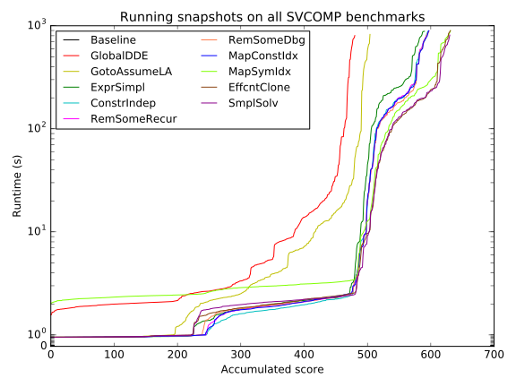
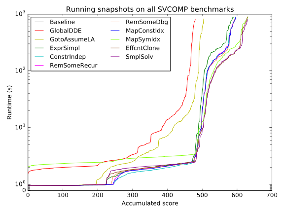

This page contains extra data that could not fit into the ICST2016 page limit that some may find useful and is noted as being available as "on the project website ".
To optimise Symbooglix we ran it on a randomly selected subset (10%) of each benchmark suite (SV-COMP and GPU) which we refer to as the "training set". We then optimised Symbooglix using only this "training set" taking periodic snapshots of the tool and running it on those bencharks.
In the paper we provided "quantile plots" for each benchmark suite where we ran each Symbooglix snapshot on the "training set". We now show these plots along side quanitle plots where those snapshots have been run on all the benchmarks. This was done after we had performed optimisation so we did not have access to this data during our optimisation process to guide our optimisations.


 

Here are the classification counts when running on the training set.
| Snapshot | Verified | Bug found | False alarm | Unknown |
|---|---|---|---|---|
| Baseline | 33 | 3 | 0 | 21 |
| GlobalDDE | 33 | 3 | 0 | 21 |
| GotoAssumeLA | 33 | 3 | 0 | 21 |
| ExprSimpl | 33 | 3 | 0 | 21 |
| ConstrIndep | 33 | 3 | 0 | 21 |
| RemSomeRecur | 37 | 3 | 0 | 17 |
| RemSomeDbg | 37 | 3 | 0 | 17 |
| MapConstIdx | 37 | 3 | 0 | 17 |
| MapSymIdx | 37 | 3 | 0 | 17 |
| EffcntClone | 37 | 3 | 0 | 17 |
| SimplSolv | 37 | 3 | 0 | 17 |
Here are the classification counts when running on the whole GPU benchmark suite.
| Snapshot | Verified | Bug found | False alarm | Unknown |
|---|---|---|---|---|
| Baseline | 260 | 29 | 0 | 290 |
| GlobalDDE | 260 | 29 | 0 | 290 |
| GotoAssumeLA | 261 | 31 | 0 | 287 |
| ExprSimpl | 268 | 31 | 0 | 280 |
| ConstrIndep | 266 | 31 | 0 | 282 |
| RemSomeRecur | 301 | 35 | 0 | 243 |
| RemSomeDbg | 301 | 35 | 0 | 243 |
| MapConstIdx | 303 | 35 | 0 | 241 |
| MapSymIdx | 302 | 35 | 0 | 242 |
| EffcntClone | 300 | 35 | 0 | 244 |
| SimplSolv | 301 | 35 | 0 | 243 |
Looking at the table above a few interesting things can be observed.
CUDA50/6_Advanced/mergeSort/mergeRanksAndIndicesKernel.bpl
and polybench/stencils/jacobi-1d-imper/kernel0.bpl). These
benchmarks weren't in the training set. It is unclear whether these
are significant though as the two benchmarks that no longer verified
with ExprSimpl were very close to the timeout in the ConstrIndep
snapshot. Those two benchmarks in the next snapshot (RemSomeRecur)
verified in under 22 seconds.
shoc/s3d/qssab/kernel.bpl)
was verified. In the ``MapConstIdx`` this benchmark verified very close to the timeout so it
is likely that the added overhead pushed this over the timeout.
gpgpu-sim_ispass2009/RAY/renderPixel.bpl
and shoc/devicememory/readGlobalMemoryCoalesced/kernel.bpl) verified. This is a significant
regression the former used to verify in ~14 seconds and in the newer snapshot hits a timeout and for the
later it used to verify in ~610 seconds and in the newer snapshot hits a timeout.
Here are the classification counts when running on the training set.
| Snapshot | Verified | Bug found | False alarm | Unknown |
|---|---|---|---|---|
| Baseline | 0 | 0 | 0 | 374 |
| GlobalDDE | 9 | 35 | 0 | 330 |
| GotoAssumeLA | 9 | 36 | 0 | 329 |
| ExprSimpl | 14 | 37 | 0 | 323 |
| ConstrIndep | 15 | 37 | 0 | 322 |
| RemSomeRecur | 15 | 39 | 0 | 320 |
| RemSomeDbg | 15 | 39 | 0 | 320 |
| MapConstIdx | 15 | 38 | 0 | 321 |
| MapSymIdx | 17 | 40 | 0 | 317 |
| EffcntClone | 17 | 40 | 0 | 317 |
| SimplSolv | 17 | 40 | 0 | 317 |
One observation about the above table is that between MapConstIdx and RemSomeDbg one
less bug was found. This was the array-examples/standard_seq_init_true-unreach-call_ground.i_.bpl
benchmark. In RemSombDbg the bug was found very close to the timeout and so the either
result inconsistency (due to running on our compute cluster) or slight overhead added
by MapConstIdx lead to this benchmark timing out for MapConstIdx.
Here are the classification counts when running on the whole SVCOMP benchmark suite.
| Snapshot | Verified | Bug found | False alarm | Unknown |
|---|---|---|---|---|
| Baseline | 0 | 0 | 0 | 3749 |
| GlobalDDE | 141 | 339 | 0 | 3269 |
| GotoAssumeLA | 141 | 363 | 0 | 3245 |
| ExprSimpl | 200 | 390 | 0 | 3159 |
| ConstrIndep | 204 | 392 | 0 | 3153 |
| RemSomeRecur | 204 | 393 | 0 | 3152 |
| RemSomeDbg | 204 | 393 | 0 | 3152 |
| MapConstIdx | 204 | 393 | 0 | 3152 |
| MapSymIdx | 236 | 395 | 0 | 3118 |
| EffcntClone | 236 | 395 | 0 | 3118 |
| SimplSolv | 236 | 394 | 0 | 3119 |
A few observations about the above table:
ldv-consumption/32_7a_cilled_false-unreach-call_linux-3.8-rc1-32_7a-fs--ecryptfs--ecryptfs.ko-ldv_main1_sequence_infinite_withcheck_stateful.cil.out.c_.bpl benchmark. The bug was previously in aprroximately 450 seconds but for a SmplSolv a timeout was hit.Below is a scatter plot of bug finding times. Each point is a single benchmark in the SV-COMP suite and its position shows the execution time of Symbooglix and Duality for that benchmark. For 236 benchmarks Symbooglix was faster than Duality and for 350 benchmarks Duality was faster than Symbooglix.